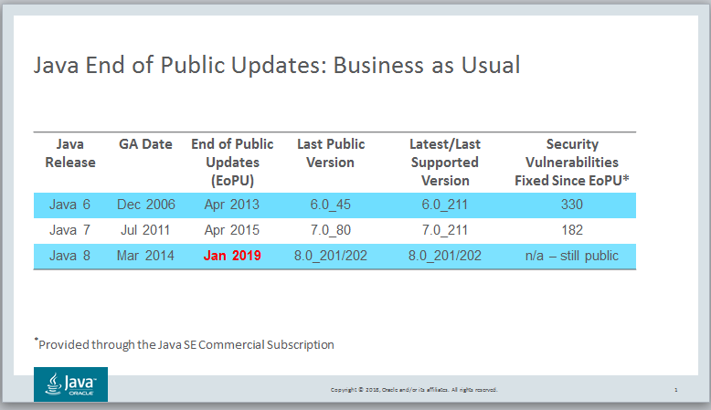

Oracle JDK 8 End of Public Updates: Business as Usual
By Jim Connors 15 January 2019
January 15, 2019 marks the final public update for the Oracle
Java SE 8 release. Henceforth referred to as Oracle JDK 8
(to avoid any confusion with Open JDK 8),
this update culminates approximately 5 years of free commercial
use and support under the terms of the Oracle
Binary Code License Agreement. Speaking from countless
interactions, there is a fair amount of customer confusion and
uncertainty concerning the fate of Oracle JDK 8 and Java going
forward. I hope these next few paragraphs provide some
clarity.
There are two important facts regarding Java releases:
- The Java End of Public Update (EoPU) process has
been taking place since the earliest days of Java back at Sun
Microsystems. All major Java
releases eventually end their public lifetime, in the past
typically once a newer major release was established.
Oracle has continued this tradition (for nearly 9 years now),
and in the case of JDK 6, extended its public lifetime longer
than any other Java release, pre or post Sun acquisition.
Announced
and extended back in January, 2018, once the final public
update runs its course, Oracle JDK 8 will have had a public
lifetime in excess of 5 years.
- A commercial Java offering has been available for
many years, predating Oracle's acquisition of Sun.
There are a couple of good reasons why. First,
organizations who run their critical business applications on
top of the Java platform want traditional 24/7 support.
Considering its importance, it makes some sense to have that
insurance policy to help diagnose and fix difficult problems
that might interrupt normal business activity. Second, and
arguably more importantly, commercial Java support enables
customers to remain on older Java releases past EoPU. Many
customers simply do not or cannot migrate to new major versions
of Java. The ability to stay on the older releases while
receiving the latest critical security updates only increases in
importance as sensitivity to security increases.

Referencing the figure above, let's look at the trajectory of the
JDK 7 release to get a better understanding. Introduced in
July 2011, JDK 7 had a public lifetime just under 4 years.
The last public update (7u80) was released in April 2015.
Since that time, Oracle has continued patching JDK 7, fixing all
known critical vulnerabilities and making
those updates available to its commercial customers.
As of this article's publish date, the current JDK 7 update is
7u211, and it cumulatively patches a total of 182 security
vulnerabilities since the time of the last public update.
The public versions of the Oracle JDK are,
and will continue to be, free to download use, however, as
time passes, those aging public releases will without question
become increasingly exposed. The question becomes whether
organizations are willing to assume that risk.
Starting with JDK9, based on feedback from the community, Oracle
has accelerated the Java release cadence to every 6 months.
Each of these 6 month releases will be freely available, supported
and updated for 6 months and only six months. Customers who
wish to stay on releases longer than 6 months with updates and
support have that option via the Java
SE Subscription program.
In conclusion, current Oracle JDK customers have options -- three
to speak of -- with regards to Java going forward, two of which
entail no commercial obligation to Oracle or any other
organization:
- You can continue to use the current publicly available
releases as you do now indefinitely. Oracle maintains an archive
of old Java downloads that enables you to get at these
releases at any time. The one concern here is, over time,
these releases will be increasing exposed to known security
vulnerabilities. If you are willing to assume that risk,
then you're all set.
- If you are concerned about maintaining the latest security
baseline, you can opt to follow the new 6 month Java release
cadence. These 6 month releases are updated twice during
their lifetime with the latest security patches and are free to
use under the GPLv2 with the
Classpath Exception License.
- There are a whole host of good reasons why; if your
organization would find it difficult if not impossible to move
at the rapid 6 month cadence, you have the option of staying on
of Oracle's designated Long Term Support (LTS) releases, and
migrating to subsequent LTS releases at your pace. These
LTS releases are supported and updated with the latest security
patches for 8 years and are available to customers via the Java
SE Subscription program.